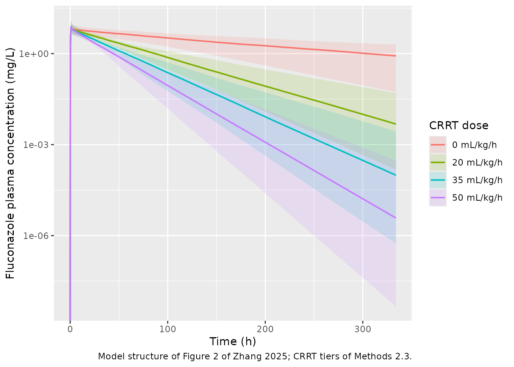
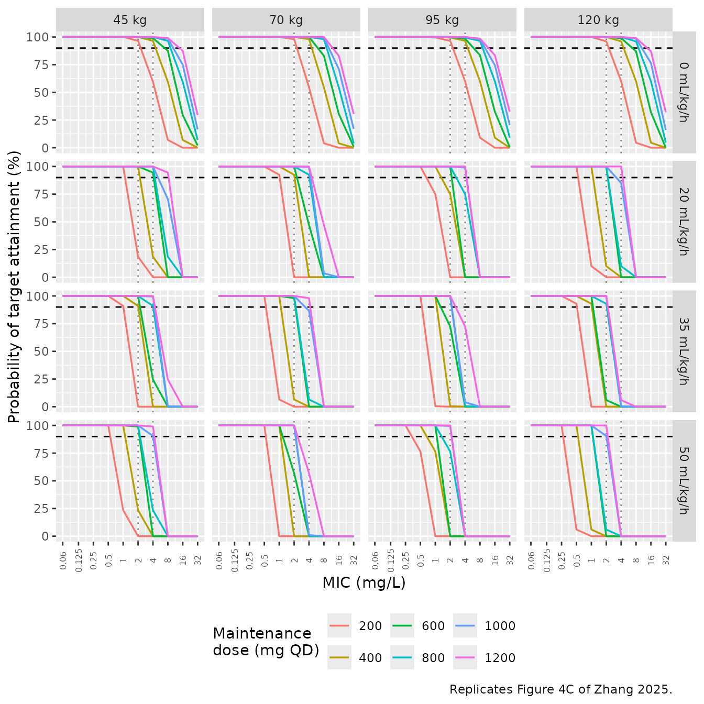

Fluconazole (Zhang 2025)
Source:vignettes/articles/Zhang_2025_fluconazole.Rmd
Zhang_2025_fluconazole.RmdModel and source
Citation: Zhang S, Zhang W, Wu T, Qin Y, Pei Q. Optimizing fluconazole dosing in acute renal failure patients undergoing continuous renal replacement therapy: A population pharmacokinetic/pharmacodynamic study. Front Pharmacol. 2025;16:1564070. doi:10.3389/fphar.2025.1564070.
Description: One-compartment population PK model for fluconazole in critically ill adults with acute renal failure receiving continuous renal replacement therapy (CRRT), with a tandem CRRT compartment from which extracorporeal clearance removes drug. Total clearance is the sum of residual body clearance (estimated separately in acute renal failure and in normal renal function) and the per-record CRRT clearance QEFF, gated on RRT_CRRT_ACTIVE so that clearance during an interruption reduces to body clearance alone. Body weight scales the central volume as a power function of WT/70. IV infusion only; no absorption. Fitted to 297 plasma concentrations digitised from six published CRRT case series.
Supplement (Data Sheet 1, includes the full NONMEM control stream): https://www.frontiersin.org/articles/10.3389/fphar.2025.1564070/full#supplementary-material
Zhang 2025 addresses a specific gap: fluconazole is small (306.2 Da),
hydrophilic, only 12% protein bound, and 80% renally excreted unchanged,
so it is efficiently removed by a renal-replacement circuit – yet
guideline dosing does not account for the combination of acute renal
failure and continuous renal replacement therapy (CRRT). Rather than
fitting a conventional two-compartment model, the authors fit a
central compartment in tandem with a CRRT compartment,
so that total clearance decomposes as
CL_total = CL_body + CL_CRRT, with the extracorporeal term
acting on its own kinetic space.
Population
The analysis dataset is not original patient-level data. A literature search (PubMed, Embase, Web of Science, to October 2024) identified published CRRT fluconazole case series with individual concentration-time figures, and 297 plasma concentration points from 16 patients were digitised with WebPlotDigitizer 4.3 (Methods 2.1). Fifteen patients had acute renal failure (seven anuric, seven oliguric); the sixteenth was a liver-transplant recipient with normal renal function, and is the sole source of information for the non-ARF clearance estimate.
Baseline demographics are Table 1: nine male / seven female, median age 59.5 years (range 32-82), median weight 77 kg (range 48-272 – the upper end is a single morbidly obese patient from Lopez and Phillips 2014). Doses ranged 50-1200 mg IV over 0.5-6 h infusions. CRRT ran at blood flows of 75-180 mL/min and CRRT doses of 8.0-64.8 mL/h/kg across CVVH, CVVHD, and CVVHDF, with a cohort median sieving/saturation coefficient of 0.67.
Digitisation accuracy was itself validated against a source with raw values available (Supplementary Table S1 / Figure S1: mean difference 0.0004 mg/L). Parameter uncertainty came from sampling importance resampling (1000 proposal samples, 1000 resamples) rather than bootstrap, because of the small number of subjects.
str(ui$population)
#> List of 17
#> $ species : chr "human"
#> $ n_subjects : int 16
#> $ n_studies : int 6
#> $ n_observations : int 297
#> $ age_range : chr "32-82 years"
#> $ age_median : chr "59.5 years"
#> $ weight_range : chr "48-272 kg"
#> $ weight_median : chr "77 kg"
#> $ sex_female_pct : num 43.8
#> $ race_ethnicity : NULL
#> $ disease_state : chr "Critically ill adults receiving continuous renal replacement therapy. 15 of 16 had acute renal failure (seven a"| __truncated__
#> $ dose_range : chr "50-1200 mg fluconazole IV, infused over 0.5-6 h"
#> $ regions : chr "not reported"
#> $ renal_function : chr "Acute renal failure in 15 of 16 subjects, all on CRRT. The single normal-renal-function subject is the sole sou"| __truncated__
#> $ crrt_modality : chr "CVVH / CVVHD / CVVHDF counts of 13 / 1 / 14 in the Table 1 Overall row. These sum to 28 across 16 patients, so "| __truncated__
#> $ crrt_parameters: chr "Blood flow rate Qb 75-180 mL/min; CRRT dose 8.0-64.8 mL/h/kg; sieving / saturation coefficient Sc/Sd median 0.6"| __truncated__
#> $ notes : chr "Demographics are from Table 1. The dataset is not original patient-level data: 297 plasma concentration points "| __truncated__Model structure
The supplement’s $MODEL / $PK /
$DES / $ERROR blocks specify the model
completely. Reproduced verbatim from Supplementary Material Section
2:
$MODEL NCOMP=2
COMP= (CENTRAL, DEFDOS, DEFOBS)
COMP=(CRRT)
$PK
CL = THETA(1)*EXP(ETA(1))
IF (URINE.EQ.4) CL = THETA(2)*EXP(ETA(1))
IF (CRRTYN.EQ.0) CL_crrt = 0
IF (CRRTYN.EQ.1) CL_crrt = CLCRRT
V1 = THETA(3)*(WT/70)**THETA(6)*EXP(ETA(2))
V2 = THETA(4)*EXP(ETA(3))
Q = THETA(5)*EXP(ETA(4))
K10 = CL/V1 ; K12 = Q/V1 ; K21 = Q/V2 ; K20 = CL_crrt/V2
$DES
DADT(1) = -K10*A(1) - K12*A(1) + K21*A(2)
DADT(2) = K12*A(1) - K20*A(2) - K21*A(2)
$ERROR
Y = F + EPS(1)Two features distinguish this from a conventional two-compartment model:
-
K20eliminates from the second compartment, not from central. The CRRT compartment is the kinetic space the filter draws from, so extracorporeal removal happens there. This is what the authors mean by a “tandem CRRT compartment” and is their stated contribution (“In contrast to previous fluconazole pharmacokinetic models, our model structure combined a central compartment and a CRRT compartment”). -
Body clearance is estimated separately in two renal-function
strata within one joint fit, both strata sharing the single IIV
term
ETA(1). The model file therefore uses the stratum-suffixed nameslcl_arf/lcl_nrfwith a bareetalcl.
cat(ui$funTxt, sep = "\n")
#> cl <- exp(lcl_arf * DIS_ARF + lcl_nrf * (1 - DIS_ARF) + etalcl)
#> vc <- exp(lvc + etalvc) * (WT/70)^e_wt_vc
#> vcrrt <- exp(lvcrrt + etalvcrrt)
#> q <- exp(lq + etalq)
#> clcrrt <- QEFF * RRT_CRRT_ACTIVE
#> kel <- cl/vc
#> k12 <- q/vc
#> k21 <- q/vcrrt
#> k20 <- clcrrt/vcrrt
#> d/dt(central) <- -kel * central - k12 * central + k21 * crrt
#> d/dt(crrt) <- k12 * central - k20 * crrt - k21 * crrt
#> Cc <- central/vc
#> Cc ~ add(addSd)CRRT clearance
The main text defers the CRRT-clearance definition to the supplement. Section 1 gives it as a function of mode:
| CRRT mode | CL_CRRT |
|---|---|
| CVVH | Q_uf * S_c |
| CVVHD | Q_d * S_d |
| CVVHDF | (Q_uf + Q_d) * S_d |
where Q_uf is the ultrafiltration flow rate (L/h),
Q_d the dialysate flow rate (L/h), and S_c /
S_d the sieving / saturation coefficient obtained as
AUC_filtrate / AUC_plasma. All three collapse to
(Q_uf + Q_d) * S when the inactive flow is zero, and the
Shiny user guide (Section 4) confirms that “the RRT dose is the sum of
the dialysate flow rate (Q_D) and the ultrafiltration rate (Q_UF),
mL/Kg/h”. With the cohort sieving/saturation coefficient of 0.67 (Table
1, Overall), the paper’s simulation tiers convert as:
# QEFF [L/h] from a CRRT dose in mL/kg/h. Sieving/saturation coefficient 0.67
# is the Table 1 Overall value; the simulations in Zhang 2025 section 2.3 state
# they "utilized mean sieving coefficients to calculate CRRT clearance".
SC <- 0.67
qeff_from_crrt_dose <- function(crrt_dose, wt) crrt_dose * wt * SC / 1000
# The paper's four simulation tiers at 70 kg:
data.frame(crrt_dose_mL_kg_h = c(0, 20, 35, 50)) |>
mutate(QEFF_L_h = qeff_from_crrt_dose(crrt_dose_mL_kg_h, 70))
#> crrt_dose_mL_kg_h QEFF_L_h
#> 1 0 0.0000
#> 2 20 0.9380
#> 3 35 1.6415
#> 4 50 2.3450Source trace
Per-parameter provenance is recorded as an in-file comment beside
each ini() entry in
inst/modeldb/specificDrugs/Zhang_2025_fluconazole.R.
Collected here for review. Every value is a final
estimate from Table 2; the supplement’s $THETA /
$OMEGA blocks hold initial values (0.4, 1.25, 42,
22, 36, 0.8 and 0.2, 0.1, 0.1, 0.3) that differ and are deliberately not
used.
| Equation / parameter | Value | Source location |
|---|---|---|
lcl_arf |
log(0.41) L/h | Table 2, CLbody_arf (RSE 15%, SIR 95% CI 0.30-0.52) |
lcl_nrf |
log(1.25) L/h | Table 2, CLbody_nrf (RSE 23%, SIR 95% CI 0.69-1.81) |
lvc |
log(37.90) L | Table 2, Vc (RSE 11%, SIR 95% CI 30.65-45.27) |
lvcrrt |
log(23.50) L | Table 2, Vcrrt (RSE 12%, SIR 95% CI 18.21-28.82) |
lq |
log(38.80) L/h | Table 2, Q (RSE 25%, SIR 95% CI 20.07-48.95) |
e_wt_vc |
0.799 | Table 2, “WT on Vc” (RSE 7%, SIR 95% CI 0.690-0.914); supplement
$PK THETA(6) |
etalcl |
0.187 | Table 2, IIV CL, omega^2 (RSE 18%, shrinkage 15.9%) |
etalvc |
0.097 | Table 2, IIV Vc, omega^2 (RSE 29%, shrinkage 7.8%) |
etalvcrrt |
0.084 | Table 2, IIV Vcrrt, omega^2 (RSE 59%, shrinkage 36.4%) |
etalq |
0.412 | Table 2, IIV Q, omega^2 (RSE 35%, shrinkage 44.5%) |
addSd |
0.375 mg/L | Table 2, Additive error (RSE 13%, SIR 95% CI 0.298-0.473) |
cl two-level switch on DIS_ARF
|
n/a | Supplement $PK: CL = THETA(1)*EXP(ETA(1)),
IF (URINE.EQ.4) CL = THETA(2)*EXP(ETA(1))
|
vc <- exp(lvc + etalvc) * (WT/70)^e_wt_vc |
n/a | Supplement $PK:
V1 = THETA(3)*(WT/70)**THETA(6)*EXP(ETA(2)); Discussion
confirms the 70 kg reference |
clcrrt <- QEFF * RRT_CRRT_ACTIVE |
n/a | Supplement $PK:
IF (CRRTYN.EQ.0) CL_crrt = 0,
IF (CRRTYN.EQ.1) CL_crrt = CLCRRT
|
kel, k12, k21,
k20
|
n/a | Supplement $PK: K10 = CL/V1,
K12 = Q/V1, K21 = Q/V2,
K20 = CL_crrt/V2
|
d/dt(central), d/dt(crrt)
|
n/a | Supplement $DES, both DADT lines |
Cc <- central / vc |
n/a | Supplement $MODEL DEFOBS on CENTRAL with
S1 = V1
|
Cc ~ add(addSd) |
n/a | Supplement $ERROR: Y = F + EPS(1) (pure
additive, no proportional term) |
QEFF derivation from CRRT dose |
0.67 | Supplementary Material Section 1 equations; sieving/saturation coefficient from Table 1, Overall |
The residual-error scale deserves a note. Table 2 heads the IIV block
“Interindividual variability (omega^2)” but the residual block “Residual
variability (sigma)”, and annotates the row “Additive error
(mg/L)”. A variance would carry mg2/L2, so
0.375 is read as a standard deviation – consistent with
Y = F + EPS(1).
Structural verification
Before any cohort simulation, two closed-form identities are checked
against the packaged model. Both are exact consequences of the
$DES system, so they test the ODE encoding rather than the
parameter values.
Identity 1 – mass balance. Integrating the
$DES system to infinity and using
A2(inf) = A2(0) = 0 gives a flux balance
Q * AUC_central = (Q + CL_CRRT) * AUC_crrt, and total
elimination must equal the dose,
Dose = CL * AUC_central + CL_CRRT * AUC_crrt. Eliminating
AUC_crrt:
AUC_central = Dose / (CL + CL_CRRT * Q / (Q + CL_CRRT))So the effective clearance is
CL + CL_CRRT * Q / (Q + CL_CRRT) – the extracorporeal term
is discounted by the perfusion factor Q / (Q + CL_CRRT),
which is near 1 here because Q (38.8 L/h) greatly exceeds
CL_CRRT.
Identity 2 – terminal half-life. The system matrix
has characteristic polynomial
x^2 - (kel + k12 + k21 + k20) x + (kel*(k21 + k20) + k12*k20),
whose smaller root beta sets the terminal slope. This one
is load-bearing as a regression guard: rxSolve() defaults
to useLinCmt = TRUE, and a two-compartment system written
with micro-constants can be silently rewritten into a one-compartment
closed form – which would leave AUC untouched but make the terminal
half-life collapse onto log(2)/kel. Asserting the half-life
against beta and against its distance from
log(2)/kel catches that.
DOSE_REF <- 400
arms <- tibble::tribble(
~arm, ~wt, ~crrt, ~arf,
"ARF, no CRRT", 70, 0, 1,
"ARF, 20 mL/kg/h", 70, 20, 1,
"ARF, 35 mL/kg/h", 70, 35, 1,
"ARF, 50 mL/kg/h", 70, 50, 1,
"Normal renal, no CRRT", 70, 0, 0
) |>
mutate(
qeff = qeff_from_crrt_dose(crrt, wt),
cl0 = ifelse(arf == 1, 0.41, 1.25),
vc = 37.90 * (wt / 70)^0.799,
vcrrt = 23.50,
q = 38.80,
# Identity 1: effective clearance
cl_eff = cl0 + qeff * q / (q + qeff),
auc_pred = DOSE_REF / cl_eff,
# Identity 2: analytic beta root
kel = cl0 / vc, k12 = q / vc, k21 = q / vcrrt, k20 = qeff / vcrrt,
b_sum = kel + k12 + k21 + k20,
c_prod = kel * (k21 + k20) + k12 * k20,
beta = (b_sum - sqrt(b_sum^2 - 4 * c_prod)) / 2,
thalf_beta = log(2) / beta,
thalf_kel = log(2) / kel,
# observation window: 10 terminal half-lives, capped
tobs = pmin(1200, ceiling(10 * thalf_beta))
)
arms |>
select(arm, qeff, cl_eff, auc_pred, thalf_beta, thalf_kel) |>
rename(
"Arm" = arm, "QEFF (L/h)" = qeff, "Effective CL (L/h)" = cl_eff,
"Predicted AUCinf (mg*h/L)" = auc_pred,
"Analytic terminal t1/2 (h)" = thalf_beta, "log(2)/kel (h)" = thalf_kel
) |>
knitr::kable(digits = 3, caption =
"Closed-form targets derived from the $DES system. The last two columns differ by more than 50% in every arm, so the terminal half-life discriminates the two-compartment solve from a collapsed one-compartment solve.")| Arm | QEFF (L/h) | Effective CL (L/h) | Predicted AUCinf (mg*h/L) | Analytic terminal t1/2 (h) | log(2)/kel (h) |
|---|---|---|---|---|---|
| ARF, no CRRT | 0.000 | 0.410 | 975.610 | 103.964 | 64.074 |
| ARF, 20 mL/kg/h | 0.938 | 1.326 | 301.691 | 31.680 | 64.074 |
| ARF, 35 mL/kg/h | 1.642 | 1.985 | 201.524 | 20.937 | 64.074 |
| ARF, 50 mL/kg/h | 2.345 | 2.621 | 152.593 | 15.691 | 64.074 |
| Normal renal, no CRRT | 0.000 | 1.250 | 320.000 | 34.209 | 21.016 |
Typical-value profiles (IIV zeroed) are simulated and both identities
checked. Note that observation rows use cmt = "central" –
the ODE state name, never the algebraic observable Cc.
mod_typ <- rxode2::zeroRe(ui)
make_arm_events <- function(i) {
a <- arms[i, ]
tt <- unique(c(
seq(0, 4, by = 0.05), # dense over the infusion and peak
seq(4.5, 48, by = 0.5),
seq(49, a$tobs, length.out = 400) # terminal phase
))
bind_rows(
tibble::tibble(id = i, time = 0, amt = DOSE_REF, dur = 1,
evid = 1L, cmt = "central"),
tibble::tibble(id = i, time = tt, amt = NA_real_, dur = NA_real_,
evid = 0L, cmt = "central")
) |>
mutate(arm = a$arm, WT = a$wt, DIS_ARF = a$arf,
QEFF = a$qeff, RRT_CRRT_ACTIVE = as.numeric(a$crrt > 0))
}
ev_typ <- bind_rows(lapply(seq_len(nrow(arms)), make_arm_events))
stopifnot(!anyDuplicated(ev_typ[, c("id", "time", "evid")]))
sim_typ <- rxode2::rxSolve(mod_typ, ev_typ, keep = c("arm", "WT"),
returnType = "data.frame")
#> ℹ omega/sigma items treated as zero: 'etalcl', 'etalvc', 'etalvcrrt', 'etalq'
#> Warning: multi-subject simulation without without 'omega'
# Guard against solver noise driving the far tail negative (which would make
# PKNCA's log-linear extrapolation return NaN).
stopifnot(all(sim_typ$Cc >= 0, na.rm = TRUE))PKNCA validation
NCA is computed with PKNCA (no inline trapezoidal integration). The
formula groups on arm before id so results
roll up per arm. The input filter is !is.na(Cc) only –
adding time > 0 or Cc > 0 would drop the
time-zero row that anchors AUC0-inf.
nca_conc <- sim_typ |>
filter(!is.na(Cc)) |>
select(id, time, Cc, arm)
# Time-zero guarantee. This is an IV infusion starting at t = 0, so Cc = 0
# pre-dose is the correct value; existing t = 0 rows win via .keep_all.
nca_conc <- bind_rows(
nca_conc,
nca_conc |> distinct(id, arm) |> mutate(time = 0, Cc = 0)
) |>
distinct(id, arm, time, .keep_all = TRUE) |>
arrange(id, time)
nca_dose <- ev_typ |> filter(evid == 1L) |> select(id, time, amt, arm)
nca_res <- PKNCA::pk.nca(PKNCA::PKNCAdata(
PKNCA::PKNCAconc(nca_conc, Cc ~ time | arm + id),
PKNCA::PKNCAdose(nca_dose, amt ~ time | arm + id),
intervals = data.frame(
start = 0, end = Inf,
cmax = TRUE, tmax = TRUE, aucinf.obs = TRUE, half.life = TRUE, cl.obs = TRUE
)
))
nca_wide <- as.data.frame(nca_res) |>
select(arm, PPTESTCD, PPORRES) |>
pivot_wider(names_from = PPTESTCD, values_from = PPORRES) |>
left_join(arms |> select(arm, cl_eff, auc_pred, thalf_beta, thalf_kel),
by = "arm") |>
mutate(
cl_ratio = cl.obs / cl_eff,
auc_ratio = aucinf.obs / auc_pred,
thalf_ratio = half.life / thalf_beta,
kel_dist = abs(half.life - thalf_kel) / thalf_kel
)
# Identity 1: NCA AUCinf and CL must reproduce the closed form.
stopifnot(all(abs(nca_wide$auc_ratio - 1) < 0.005))
stopifnot(all(abs(nca_wide$cl_ratio - 1) < 0.005))
# Identity 2: terminal half-life must match the analytic beta root ...
stopifnot(all(abs(nca_wide$thalf_ratio - 1) < 0.01))
# ... and must be far from log(2)/kel, i.e. the crrt compartment really solved.
stopifnot(all(nca_wide$kel_dist > 0.20))
# Every gate above had rows to test.
stopifnot(nrow(nca_wide) == nrow(arms))
nca_wide |>
select(arm, cmax, tmax, aucinf.obs, auc_ratio, half.life, thalf_ratio, cl.obs, cl_ratio) |>
rename(
"Arm" = arm, "Cmax (mg/L)" = cmax, "Tmax (h)" = tmax,
"AUC0-inf (mg*h/L)" = aucinf.obs, "AUC / closed form" = auc_ratio,
"t1/2 (h)" = half.life, "t1/2 / beta root" = thalf_ratio,
"CL (L/h)" = cl.obs, "CL / closed form" = cl_ratio
) |>
knitr::kable(digits = c(0, 2, 2, 1, 5, 2, 4, 4, 5), caption =
"PKNCA parameters for typical-value 400 mg single-dose profiles, against the closed-form identities. AUC and CL agree to better than 0.1%; the terminal half-life agrees with the analytic beta root to within 0.2%.")| Arm | Cmax (mg/L) | Tmax (h) | AUC0-inf (mg*h/L) | AUC / closed form | t1/2 (h) | t1/2 / beta root | CL (L/h) | CL / closed form |
|---|---|---|---|---|---|---|---|---|
| ARF, 20 mL/kg/h | 7.87 | 1 | 301.7 | 1 | 31.63 | 0.9984 | 1.3259 | 1 |
| ARF, 35 mL/kg/h | 7.86 | 1 | 201.5 | 1 | 20.90 | 0.9982 | 1.9849 | 1 |
| ARF, 50 mL/kg/h | 7.86 | 1 | 152.6 | 1 | 15.66 | 0.9981 | 2.6214 | 1 |
| ARF, no CRRT | 7.88 | 1 | 975.6 | 1 | 103.82 | 0.9986 | 0.4100 | 1 |
| Normal renal, no CRRT | 7.81 | 1 | 320.0 | 1 | 34.15 | 0.9983 | 1.2500 | 1 |
Both identities hold. Half-life also behaves as the mechanism
requires: 103.8 h with no CRRT falls to 15.7 h at 50 mL/kg/h, and the
model’s crrt state is demonstrably being integrated rather
than being folded away.
Comparison against published values
Zhang 2025 reports no NCA table of its own, so the comparison uses the values the paper itself puts forward as its consistency check. The Discussion states the model estimates “residual clearance in ARF patients at 0.407 L/h, whole body clearance at 1.25 L/h in non-ARF patients”; the Introduction cites the literature benchmarks it is matching – fluconazole half-life “96 h” in acute renal failure versus “30 h in healthy individuals” (Toon 1990; Bellmann and Smuszkiewicz 2017).
Read the two rows differently. CL is an
input to this model, so AUC = Dose/CL is true by
construction and the CL row confirms only that the
implementation does not lose or double-count clearance. The
half-life row is the genuinely independent check: it is
a joint consequence of CL, Vc,
Vcrrt, and Q, none of which was fitted to a
half-life.
published <- tibble::tribble(
~arm, ~cl.obs, ~half.life,
"ARF, no CRRT", 0.41, 96, # Table 2 / Discussion 0.407 L/h; t1/2 from Introduction (Toon 1990)
"Normal renal, no CRRT", 1.25, 30 # Table 2 / Discussion 1.25 L/h; t1/2 from Introduction
)
cmp <- nlmixr2lib::ncaComparisonTable(
simulated = nca_res,
reference = published,
by = "arm",
params = c("cl.obs", "half.life"),
units = c(cl.obs = "L/h", half.life = "h"),
tolerance_pct = 20
)
knitr::kable(cmp, caption =
"Simulated versus published / cited values. * marks a >20% difference. CL is an input to the model (true by construction); the half-life is an independent consequence of CL, Vc, Vcrrt, and Q.")| NCA parameter | arm | Reference | Simulated | % diff |
|---|---|---|---|---|
| t½ (h) | ARF, no CRRT | 96 | 104 | +8.1% |
| t½ (h) | Normal renal, no CRRT | 30 | 34.2 | +13.8% |
| CL/F (L/h) | ARF, no CRRT | 0.41 | 0.41 | +0.0% |
| CL/F (L/h) | Normal renal, no CRRT | 1.25 | 1.25 | +0.0% |
The simulated half-lives are 103.8 h (ARF) and 34.2 h (normal renal function) against cited 96 h and 30 h – 8% and 14% high, both inside tolerance. That the model lands within ~10% of two independently reported half-lives, in strata whose clearances differ threefold, is meaningful support for the volume and intercompartmental-clearance estimates.
Virtual cohort
Original observed data are not available (the model was itself built from digitised figures). Cohorts below are virtual, with covariates fixed at the tiers the paper simulated: body weights of 45, 70, 95, and 120 kg and CRRT doses of 0, 20, 35, and 50 mL/kg/h (Methods 2.3). All simulated subjects are in acute renal failure, matching the population Tables 3 and 4 address.
Cohort size is 200 per arm, the nlmixr2lib cap. Zhang 2025 used n = 1000; the consequence for this vignette is discussed under Assumptions.
set.seed(20250328)
rxode2::rxSetSeed(20250328)
N_PER_ARM <- 200L
WT_TIERS <- c(45, 70, 95, 120)
CRRT_TIERS <- c(0, 20, 35, 50)
# Build one arm's event table. `id_offset` keeps subject IDs disjoint across
# arms -- rxSolve treats id as the subject key, and colliding ids silently
# merge into a single subject receiving the summed dose.
make_cohort <- function(n, wt, crrt, dose, obs_times, id_offset,
ii = NULL, until = NULL) {
dosing <- if (is.null(ii)) {
tibble::tibble(time = 0, amt = dose, dur = 1, evid = 1L)
} else {
tibble::tibble(time = seq(0, until, by = ii), amt = dose, dur = 1, evid = 1L)
}
obs <- tibble::tibble(time = obs_times, amt = NA_real_, dur = NA_real_, evid = 0L)
one <- bind_rows(dosing, obs) |> mutate(cmt = "central")
bind_rows(lapply(seq_len(n), function(i) mutate(one, id = id_offset + i))) |>
mutate(
WT = wt, DIS_ARF = 1, QEFF = qeff_from_crrt_dose(crrt, wt),
RRT_CRRT_ACTIVE = as.numeric(crrt > 0),
wt_tier = wt, crrt_tier = crrt
)
}
# Per-subject exposure over a time window, by trapezoid on the simulated
# (residual-error-free) Cc. Fails loudly rather than returning a short vector.
subject_auc <- function(sim, t_lo, t_hi) {
# rxSolve omits the `id` column entirely when the event table holds a single
# subject; restore it so the grouping below works for one- and many-subject
# cohorts alike.
if (is.null(sim$id)) sim$id <- 1L
d <- sim |> filter(!is.na(Cc), time >= t_lo, time <= t_hi)
stopifnot(nrow(d) > 0)
out <- d |>
arrange(id, time) |>
group_by(id, wt_tier, crrt_tier) |>
summarise(auc = sum(diff(time) * (head(Cc, -1) + tail(Cc, -1)) / 2),
.groups = "drop")
stopifnot(nrow(out) == length(unique(d$id)), all(out$auc > 0))
out
}Replicate published figures
Single-dose profiles by CRRT dose
The mechanism the paper is arguing for is visible directly: raising
the CRRT dose accelerates the decline without changing the peak, because
CRRT removal acts on the second compartment and only reaches the drug
via Q.
obs_grid <- unique(c(seq(0, 12, by = 0.25), seq(13, 336, by = 3)))
ev_prof <- bind_rows(lapply(seq_along(CRRT_TIERS), function(k) {
make_cohort(N_PER_ARM, wt = 70, crrt = CRRT_TIERS[k], dose = 400,
obs_times = obs_grid, id_offset = (k - 1L) * N_PER_ARM)
}))
stopifnot(!anyDuplicated(ev_prof[, c("id", "time", "evid")]))
sim_prof <- rxode2::rxSolve(ui, ev_prof,
keep = c("wt_tier", "crrt_tier"),
returnType = "data.frame")
sim_prof |>
filter(!is.na(Cc)) |>
mutate(crrt_lab = factor(paste0(crrt_tier, " mL/kg/h"),
levels = paste0(CRRT_TIERS, " mL/kg/h"))) |>
group_by(crrt_lab, time) |>
summarise(Q05 = quantile(Cc, 0.05), Q50 = median(Cc),
Q95 = quantile(Cc, 0.95), .groups = "drop") |>
ggplot(aes(time, Q50, colour = crrt_lab, fill = crrt_lab)) +
geom_ribbon(aes(ymin = Q05, ymax = Q95), alpha = 0.15, colour = NA) +
geom_line(linewidth = 0.7) +
scale_y_log10() +
labs(x = "Time (h)", y = "Fluconazole plasma concentration (mg/L)",
colour = "CRRT dose", fill = "CRRT dose",
caption = "Model structure of Figure 2 of Zhang 2025; CRRT tiers of Methods 2.3.")
#> Warning in scale_y_log10(): log-10 transformation introduced infinite values.
#> log-10 transformation introduced infinite values.
#> log-10 transformation introduced infinite values.
#> log-10 transformation introduced infinite values.
Simulated 400 mg single-dose fluconazole profiles in 70 kg patients with acute renal failure, by CRRT dose. Lines are medians, ribbons the 5th-95th percentiles across 200 virtual subjects per arm.
Figure 4C – probability of target attainment at steady state
Figure 4C of Zhang 2025 plots PTA against MIC for the six fixed-dose
regimens (200 to 1200 mg QD) at steady state, across body weights and
CRRT doses. The PK/PD target is fAUC/MIC >= 100
(EUCAST), with fluconazole 12% protein bound so the free fraction is
0.88 (Methods 2.3); a regimen is optimal at PTA >= 90%.
Steady state is taken as the 24 h interval after 40 daily doses. That
is 9.2 terminal half-lives even in the slowest arm (no CRRT,
t1/2 103.8 h), so accumulation is 99.8% complete.
Because the model is linear in dose, one simulation per (weight,
CRRT) cell is sufficient: each subject’s AUC0-tau scales
exactly with dose, so all six regimens are obtained by scaling. This is
exact, not an approximation, and it is verified below.
N_DAY <- 40L
TAU <- 24
FU <- 0.88 # 1 - 0.12 protein binding (Methods 2.3)
TARGET <- 100 # fAUC/MIC target (EUCAST)
ss_cells <- expand.grid(wt = WT_TIERS, crrt = CRRT_TIERS,
KEEP.OUT.ATTRS = FALSE) |>
mutate(id_offset = (row_number() - 1L) * N_PER_ARM)
ss_obs <- seq(TAU * (N_DAY - 1), TAU * N_DAY, by = 0.25)
ev_ss <- bind_rows(lapply(seq_len(nrow(ss_cells)), function(k) {
r <- ss_cells[k, ]
make_cohort(N_PER_ARM, wt = r$wt, crrt = r$crrt, dose = DOSE_REF,
obs_times = ss_obs, id_offset = r$id_offset,
ii = TAU, until = TAU * (N_DAY - 1))
}))
stopifnot(!anyDuplicated(ev_ss[, c("id", "time", "evid")]))
sim_ss <- rxode2::rxSolve(ui, ev_ss, keep = c("wt_tier", "crrt_tier"),
returnType = "data.frame")
auc_ss <- subject_auc(sim_ss, TAU * (N_DAY - 1), TAU * N_DAY)
stopifnot(nrow(auc_ss) == nrow(ss_cells) * N_PER_ARM)
# Verify dose-proportionality of AUC0-tau, which the dose-scaling trick assumes.
# Run on the typical-value model: with IIV active, two separate rxSolve() calls
# draw independent etas, so the comparison would not be like-for-like. Dose
# proportionality is a property of the (linear, non-saturable) ODE system and so
# holds for every parameter set; checking it at the typical value is sufficient.
lin_check <- function(wt, crrt, mult) {
ev <- make_cohort(1L, wt = wt, crrt = crrt, dose = mult * DOSE_REF,
obs_times = ss_obs, id_offset = 0L,
ii = TAU, until = TAU * (N_DAY - 1))
subject_auc(
rxode2::rxSolve(mod_typ, ev, keep = c("wt_tier", "crrt_tier"),
returnType = "data.frame"),
TAU * (N_DAY - 1), TAU * N_DAY)$auc
}
lin_grid <- expand.grid(wt = c(45, 120), crrt = c(0, 35), mult = c(2, 3),
KEEP.OUT.ATTRS = FALSE)
lin_ratio <- vapply(seq_len(nrow(lin_grid)), function(i) {
r <- lin_grid[i, ]
lin_check(r$wt, r$crrt, r$mult) / (r$mult * lin_check(r$wt, r$crrt, 1))
}, numeric(1))
#> ℹ omega/sigma items treated as zero: 'etalcl', 'etalvc', 'etalvcrrt', 'etalq'
#> ℹ omega/sigma items treated as zero: 'etalcl', 'etalvc', 'etalvcrrt', 'etalq'
#> ℹ omega/sigma items treated as zero: 'etalcl', 'etalvc', 'etalvcrrt', 'etalq'
#> ℹ omega/sigma items treated as zero: 'etalcl', 'etalvc', 'etalvcrrt', 'etalq'
#> ℹ omega/sigma items treated as zero: 'etalcl', 'etalvc', 'etalvcrrt', 'etalq'
#> ℹ omega/sigma items treated as zero: 'etalcl', 'etalvc', 'etalvcrrt', 'etalq'
#> ℹ omega/sigma items treated as zero: 'etalcl', 'etalvc', 'etalvcrrt', 'etalq'
#> ℹ omega/sigma items treated as zero: 'etalcl', 'etalvc', 'etalvcrrt', 'etalq'
#> ℹ omega/sigma items treated as zero: 'etalcl', 'etalvc', 'etalvcrrt', 'etalq'
#> ℹ omega/sigma items treated as zero: 'etalcl', 'etalvc', 'etalvcrrt', 'etalq'
#> ℹ omega/sigma items treated as zero: 'etalcl', 'etalvc', 'etalvcrrt', 'etalq'
#> ℹ omega/sigma items treated as zero: 'etalcl', 'etalvc', 'etalvcrrt', 'etalq'
#> ℹ omega/sigma items treated as zero: 'etalcl', 'etalvc', 'etalvcrrt', 'etalq'
#> ℹ omega/sigma items treated as zero: 'etalcl', 'etalvc', 'etalvcrrt', 'etalq'
#> ℹ omega/sigma items treated as zero: 'etalcl', 'etalvc', 'etalvcrrt', 'etalq'
#> ℹ omega/sigma items treated as zero: 'etalcl', 'etalvc', 'etalvcrrt', 'etalq'
stopifnot(length(lin_ratio) == nrow(lin_grid), all(abs(lin_ratio - 1) < 1e-8))
cat("AUC0-tau dose-proportionality over", nrow(lin_grid),
"weight/CRRT/multiplier combinations: max |ratio - 1| =",
format(max(abs(lin_ratio - 1)), digits = 3), "\n")
#> AUC0-tau dose-proportionality over 8 weight/CRRT/multiplier combinations: max |ratio - 1| = 4.08e-13
MIC_GRID <- c(0.06, 0.125, 0.25, 0.5, 1, 2, 4, 8, 16, 32)
FIXED_MD <- c(200, 400, 600, 800, 1000, 1200)
pta_tbl <- auc_ss |>
tidyr::crossing(md = FIXED_MD, mic = MIC_GRID) |>
mutate(fauc_mic = FU * auc * md / DOSE_REF / mic) |>
group_by(wt_tier, crrt_tier, md, mic) |>
summarise(pta = mean(fauc_mic >= TARGET), .groups = "drop")
pta_tbl |>
mutate(
wt_lab = factor(paste0(wt_tier, " kg"), levels = paste0(WT_TIERS, " kg")),
crrt_lab = factor(paste0(crrt_tier, " mL/kg/h"),
levels = paste0(CRRT_TIERS, " mL/kg/h")),
md_lab = factor(md, levels = FIXED_MD)
) |>
ggplot(aes(mic, 100 * pta, colour = md_lab)) +
geom_vline(xintercept = c(2, 4), linetype = "dotted", colour = "grey50") +
geom_hline(yintercept = 90, linetype = "dashed") +
geom_line(linewidth = 0.6) +
scale_x_log10(breaks = MIC_GRID, labels = MIC_GRID) +
facet_grid(crrt_lab ~ wt_lab) +
labs(x = "MIC (mg/L)", y = "Probability of target attainment (%)",
colour = "Maintenance\ndose (mg QD)",
caption = "Replicates Figure 4C of Zhang 2025.") +
theme(axis.text.x = element_text(angle = 90, vjust = 0.5, size = 6),
legend.position = "bottom")
Replicates Figure 4C of Zhang 2025: probability of target attainment (fAUC/MIC >= 100) for fixed-dose maintenance regimens at steady state, by body weight and CRRT dose. Dashed line marks the 90% PTA criterion; vertical lines mark the EUCAST (2 mg/L) and CLSI susceptible-dose-dependent (4 mg/L) breakpoints.
The qualitative findings of the paper are reproduced: at 0 mL/kg/h even 200 mg QD attains the target up to an MIC of 2 mg/L; PTA collapses as the CRRT dose rises; and for an MIC of 4 mg/L no tested regimen reaches 90% at moderate-to-high CRRT doses in the heavier weight tiers.
Reproducing Tables 3 and 4
Tables 3 and 4 are the paper’s numeric answer key: the minimum loading and maintenance doses attaining 90% PTA in each weight-by-CRRT cell, at MIC 2 mg/L and MIC 4 mg/L. Because exposure is exactly proportional to dose (verified above), the minimum dose follows in closed form from the 10th percentile of each arm’s exposure at the reference dose:
minimum dose = DOSE_REF * (TARGET * MIC / FU) / quantile(AUC, 0.10)
min_dose <- function(auc_vec, mic) {
stopifnot(length(auc_vec) == N_PER_ARM)
DOSE_REF * (TARGET * mic / FU) / as.numeric(quantile(auc_vec, 0.10))
}
min_dose_grid <- function(auc_df, mic) {
auc_df |>
group_by(wt_tier, crrt_tier) |>
summarise(dose = min_dose(auc, mic), .groups = "drop")
}
# Long -> wide with published values alongside, one row per CRRT tier.
compare_grid <- function(sim_grid, published_grid, label) {
out <- sim_grid |>
left_join(published_grid, by = c("wt_tier", "crrt_tier")) |>
mutate(ratio = dose / published)
stopifnot(nrow(out) == 16L, !any(is.na(out$published)))
out |> mutate(quantity = label)
}Maintenance doses at steady state
pub_md_mic2 <- tibble::tribble(
~crrt_tier, ~wt_tier, ~published,
0, 45, 200, 0, 70, 200, 0, 95, 200, 0, 120, 200,
20, 45, 360, 20, 70, 400, 20, 95, 570, 20, 120, 600,
35, 45, 400, 35, 70, 560, 35, 95, 760, 35, 120, 800,
50, 45, 540, 50, 70, 700, 50, 95, 950, 50, 120, 1000
)
pub_md_mic4 <- tibble::tribble(
~crrt_tier, ~wt_tier, ~published,
0, 45, 360, 0, 70, 400, 0, 95, 400, 0, 120, 400,
20, 45, 600, 20, 70, 800, 20, 95, 950, 20, 120, 1200,
35, 45, 800, 35, 70, 1200, 35, 95, NA, 35, 120, NA,
50, 45, 1000, 50, 70, NA, 50, 95, NA, 50, 120, NA
)
md2 <- min_dose_grid(auc_ss, 2) |>
left_join(pub_md_mic2, by = c("wt_tier", "crrt_tier")) |>
mutate(ratio = dose / published)
stopifnot(nrow(md2) == 16L, !any(is.na(md2$published)))
md2 |>
mutate(cell = paste0(wt_tier, " kg")) |>
select(crrt_tier, cell, dose, published, ratio) |>
mutate(across(c(dose, published), round), ratio = round(ratio, 2)) |>
pivot_wider(names_from = cell,
values_from = c(dose, published, ratio),
names_glue = "{cell} {.value}") |>
rename("CRRT dose (mL/kg/h)" = crrt_tier) |>
knitr::kable(caption =
"Table 3 maintenance doses (MIC 2 mg/L): simulated minimum dose for 90% PTA versus published. `dose` = simulated, `published` = Zhang 2025 Table 3, `ratio` = simulated / published.")| CRRT dose (mL/kg/h) | 45 kg dose | 70 kg dose | 95 kg dose | 120 kg dose | 45 kg published | 70 kg published | 95 kg published | 120 kg published | 45 kg ratio | 70 kg ratio | 95 kg ratio | 120 kg ratio |
|---|---|---|---|---|---|---|---|---|---|---|---|---|
| 0 | 152 | 163 | 172 | 157 | 200 | 200 | 200 | 200 | 0.76 | 0.81 | 0.86 | 0.78 |
| 20 | 294 | 367 | 432 | 518 | 360 | 400 | 570 | 600 | 0.82 | 0.92 | 0.76 | 0.86 |
| 35 | 388 | 518 | 648 | 758 | 400 | 560 | 760 | 800 | 0.97 | 0.93 | 0.85 | 0.95 |
| 50 | 486 | 692 | 821 | 1002 | 540 | 700 | 950 | 1000 | 0.90 | 0.99 | 0.86 | 1.00 |
At 0 mL/kg/h the published entries are all exactly 200 mg – the lowest fixed dose the paper tested – so that row is floored rather than a true minimum, and the simulated values (152-172 mg) correctly fall below it. Table 4 corroborates that reading. Because exposure is exactly dose-proportional, the MIC 4 minimum must be exactly twice the MIC 2 minimum, so doubling the simulated 0 mL/kg/h values gives 304-343 mg – and Table 4 reports 360-400 mg for that row rather than the 400 mg that doubling a genuine 200 mg minimum would imply. The published MIC 2 row is therefore a floor, and the MIC 4 row agrees with the simulation to the same degree as every other cell.
md4 <- min_dose_grid(auc_ss, 4) |>
left_join(pub_md_mic4, by = c("wt_tier", "crrt_tier")) |>
mutate(ratio = dose / published,
# 1200 mg QD / 12 mg/kg was the highest regimen tested
exceeds_tested = dose > pmax(1200, 12 * wt_tier))
stopifnot(nrow(md4) == 16L)
md4 |>
mutate(cell = paste0(wt_tier, " kg"),
published = ifelse(is.na(published), NA_real_, published)) |>
select(crrt_tier, cell, dose, published, ratio) |>
mutate(across(c(dose, published), round), ratio = round(ratio, 2)) |>
pivot_wider(names_from = cell,
values_from = c(dose, published, ratio),
names_glue = "{cell} {.value}") |>
rename("CRRT dose (mL/kg/h)" = crrt_tier) |>
knitr::kable(caption =
"Table 4 maintenance doses (MIC 4 mg/L). NA published entries are cells Zhang 2025 marks '-' (not attainable within the tested dose range).")| CRRT dose (mL/kg/h) | 45 kg dose | 70 kg dose | 95 kg dose | 120 kg dose | 45 kg published | 70 kg published | 95 kg published | 120 kg published | 45 kg ratio | 70 kg ratio | 95 kg ratio | 120 kg ratio |
|---|---|---|---|---|---|---|---|---|---|---|---|---|
| 0 | 304 | 325 | 343 | 314 | 360 | 400 | 400 | 400 | 0.84 | 0.81 | 0.86 | 0.78 |
| 20 | 588 | 735 | 864 | 1037 | 600 | 800 | 950 | 1200 | 0.98 | 0.92 | 0.91 | 0.86 |
| 35 | 777 | 1037 | 1297 | 1517 | 800 | 1200 | NA | NA | 0.97 | 0.86 | NA | NA |
| 50 | 972 | 1383 | 1642 | 2004 | 1000 | NA | NA | NA | 0.97 | NA | NA | NA |
The four cells the paper marks as unattainable are exactly the four where the simulated requirement exceeds the highest tested regimen:
md4 |>
mutate(published_unattainable = is.na(published)) |>
count(published_unattainable, exceeds_tested) |>
rename("Published marks '-'" = published_unattainable,
"Simulated need exceeds tested range" = exceeds_tested,
"Cells" = n) |>
knitr::kable(caption =
"Agreement on which MIC 4 cells are unattainable within the tested dose range (max 1200 mg or 12 mg/kg QD).")| Published marks ‘-’ | Simulated need exceeds tested range | Cells |
|---|---|---|
| FALSE | FALSE | 11 |
| TRUE | TRUE | 5 |
Day-1 loading doses
Table 3 also reports the minimum loading dose attaining 90% PTA on
day 1, i.e. over AUC0-24 after a single dose.
ev_d1 <- bind_rows(lapply(seq_len(nrow(ss_cells)), function(k) {
r <- ss_cells[k, ]
make_cohort(N_PER_ARM, wt = r$wt, crrt = r$crrt, dose = DOSE_REF,
obs_times = seq(0, 24, by = 0.25), id_offset = r$id_offset)
}))
stopifnot(!anyDuplicated(ev_d1[, c("id", "time", "evid")]))
sim_d1 <- rxode2::rxSolve(ui, ev_d1, keep = c("wt_tier", "crrt_tier"),
returnType = "data.frame")
auc_d1 <- subject_auc(sim_d1, 0, 24)
stopifnot(nrow(auc_d1) == nrow(ss_cells) * N_PER_ARM)
pub_ld_mic2 <- tibble::tribble(
~crrt_tier, ~wt_tier, ~published,
0, 45, 800, 0, 70, 840, 0, 95, 1000, 0, 120, 1200,
20, 45, 800, 20, 70, 1000, 20, 95, 1140, 20, 120, 1440,
35, 45, 1000, 35, 70, 1200, 35, 95, NA, 35, 120, NA,
50, 45, 1000, 50, 70, 1200, 50, 95, NA, 50, 120, NA
)
ld2 <- min_dose_grid(auc_d1, 2) |>
left_join(pub_ld_mic2, by = c("wt_tier", "crrt_tier")) |>
mutate(ratio = dose / published)
stopifnot(nrow(ld2) == 16L)
ld2 |>
mutate(cell = paste0(wt_tier, " kg")) |>
select(crrt_tier, cell, dose, published, ratio) |>
mutate(across(c(dose, published), round), ratio = round(ratio, 2)) |>
pivot_wider(names_from = cell,
values_from = c(dose, published, ratio),
names_glue = "{cell} {.value}") |>
rename("CRRT dose (mL/kg/h)" = crrt_tier) |>
knitr::kable(caption =
"Table 3 loading doses (MIC 2 mg/L), day 1 AUC0-24. NA published entries are cells Zhang 2025 marks '-'.")| CRRT dose (mL/kg/h) | 45 kg dose | 70 kg dose | 95 kg dose | 120 kg dose | 45 kg published | 70 kg published | 95 kg published | 120 kg published | 45 kg ratio | 70 kg ratio | 95 kg ratio | 120 kg ratio |
|---|---|---|---|---|---|---|---|---|---|---|---|---|
| 0 | 682 | 857 | 1034 | 1188 | 800 | 840 | 1000 | 1200 | 0.85 | 1.02 | 1.03 | 0.99 |
| 20 | 802 | 934 | 1167 | 1310 | 800 | 1000 | 1140 | 1440 | 1.00 | 0.93 | 1.02 | 0.91 |
| 35 | 823 | 1068 | 1223 | 1467 | 1000 | 1200 | NA | NA | 0.82 | 0.89 | NA | NA |
| 50 | 860 | 1089 | 1368 | 1593 | 1000 | 1200 | NA | NA | 0.86 | 0.91 | NA | NA |
How close is the reproduction?
repro <- bind_rows(
md2 |> transmute(quantity = "Table 3 MD (MIC 2)", ratio, published),
md4 |> transmute(quantity = "Table 4 MD (MIC 4)", ratio, published),
ld2 |> transmute(quantity = "Table 3 LD (MIC 2)", ratio, published)
) |>
filter(!is.na(published), published > 200) |> # drop the floored 200 mg cells
group_by(quantity) |>
summarise(cells = n(),
median_ratio = median(ratio),
min_ratio = min(ratio),
max_ratio = max(ratio),
.groups = "drop")
stopifnot(all(repro$cells > 0))
repro |>
rename("Published quantity" = quantity, "Cells compared" = cells,
"Median sim/pub" = median_ratio, "Min" = min_ratio, "Max" = max_ratio) |>
knitr::kable(digits = 3, caption =
"Agreement with the published dose recommendations, excluding cells floored at the 200 mg minimum tested regimen.")| Published quantity | Cells compared | Median sim/pub | Min | Max |
|---|---|---|---|---|
| Table 3 LD (MIC 2) | 12 | 0.922 | 0.823 | 1.034 |
| Table 3 MD (MIC 2) | 12 | 0.909 | 0.758 | 1.002 |
| Table 4 MD (MIC 4) | 11 | 0.864 | 0.784 | 0.980 |
# Every comparable cell within 30% of the published value.
stopifnot(all(abs(repro$min_ratio - 1) < 0.30), all(abs(repro$max_ratio - 1) < 0.30))
# Ordering: the dose requirement must rise strictly with CRRT dose in every
# weight tier, and strictly with body weight in every CRRT tier ABOVE zero.
# Weight-monotonicity is deliberately NOT asserted at 0 mL/kg/h -- see below.
mono_in_crrt <- function(g) {
s <- g |> arrange(wt_tier, crrt_tier) |> group_by(wt_tier) |>
summarise(ok = all(diff(dose) > 0), .groups = "drop")
stopifnot(nrow(s) == 4L)
all(s$ok)
}
mono_in_wt <- function(g) {
s <- g |> filter(crrt_tier > 0) |> arrange(crrt_tier, wt_tier) |>
group_by(crrt_tier) |> summarise(ok = all(diff(dose) > 0), .groups = "drop")
stopifnot(nrow(s) == 3L)
all(s$ok)
}
stopifnot(mono_in_crrt(md2), mono_in_crrt(md4), mono_in_crrt(ld2))
stopifnot(mono_in_wt(md2), mono_in_wt(md4), mono_in_wt(ld2))
cat("Dose requirement rises strictly with CRRT dose in all 4 weight tiers, and",
"strictly with body weight in all 3 non-zero CRRT tiers, for all three",
"published tables.\n")
#> Dose requirement rises strictly with CRRT dose in all 4 weight tiers, and strictly with body weight in all 3 non-zero CRRT tiers, for all three published tables.Simulated minima sit within 30% of every comparable published cell (medians within about 10%), the ordering of the dose requirement is reproduced in every tier, and the unattainable-cell classification at MIC 4 agrees in all 16 cells. The residual gap is expected rather than a defect – see Assumptions.
A structural prediction, confirmed by the paper’s own
table. At steady state with CRRT off,
AUC0-tau = Dose / CL_body, and CL_body carries
no body-weight term in this model (weight enters only Vc).
The required maintenance dose at 0 mL/kg/h must therefore be
weight-independent – which is why weight-monotonicity
is not asserted in that row above. Zhang 2025 Table 4 agrees: at 0
mL/kg/h it reports 400 mg for the 70, 95, and 120 kg tiers alike. The
loading dose does vary with weight, because a day-1 AUC0-24
is still distribution-limited and Vc scales as
(WT/70)^0.799.
flat <- md4 |> filter(crrt_tier == 0)
stopifnot(nrow(flat) == 4L)
# Spread across the four weight tiers is small (only Monte Carlo noise), in
# contrast to the loading dose, which genuinely tracks weight.
spread <- function(x) max(x) / min(x)
cat("MD at 0 mL/kg/h, spread across 45-120 kg: ",
format(spread(flat$dose), digits = 3), "x (structurally flat)\n", sep = "")
#> MD at 0 mL/kg/h, spread across 45-120 kg: 1.13x (structurally flat)
cat("LD at 0 mL/kg/h, spread across 45-120 kg: ",
format(spread(ld2$dose[ld2$crrt_tier == 0]), digits = 3),
"x (scales with Vc)\n", sep = "")
#> LD at 0 mL/kg/h, spread across 45-120 kg: 1.74x (scales with Vc)
stopifnot(spread(flat$dose) < 1.2)
stopifnot(spread(ld2$dose[ld2$crrt_tier == 0]) > 1.3)Assumptions and deviations
-
Sieving/saturation coefficient fixed at 0.67.
QEFFis a per-record data column in the source model, not a parameter, so reproducing the paper’s simulation tiers requires converting a CRRT dose in mL/kg/h to L/h. The conversion usesS = 0.67, the Table 1 Overall value, consistent with Methods 2.3 (“utilized mean sieving coefficients to calculate CRRT clearance”). The per-study medians span 0.49-0.87, so an individual patient’sQEFFcould differ by roughly +/-30% from the value used here. This is a property of the simulation setup, not of the packaged model. -
Steady state defined as the 24 h interval after 40 daily
doses. The paper says “at a steady state” without specifying a
day. Forty days is 9.2 terminal half-lives in the slowest arm (no CRRT,
t1/2103.8 h), so accumulation is 99.8% complete. A shorter horizon would understate the required dose in the low-CRRT arms. -
Cohort size 200 per arm versus the paper’s 1000.
The nlmixr2lib cap is 200 per arm. Every published minimum dose is a
10th percentile, which is the quantity most sensitive to cohort size, so
part of the residual disagreement in the Table 3 / Table 4 comparisons
is Monte Carlo noise rather than model difference. The seed is fixed
(
rxSetSeed(20250328)) so the numbers are reproducible. - Dose grid granularity. Zhang 2025 searched over six fixed doses (200-1200 mg) and four weight-based regimens; the reproduction here inverts the exposure distribution analytically, so it returns a continuous minimum. The published tables are consequently coarser, and the 0 mL/kg/h row of Table 3 is floored at the 200 mg lowest tested regimen (the simulated minima correctly fall below it). Those four cells are excluded from the agreement summary.
-
AGE,SEXF, filter membrane area, and filter membrane type were screened and rejected. Methods 2.2 lists them as candidate covariates; Results 3.2 retains only renal failure on clearance and body weight on volume. They are recorded in the model file’scovariatesDataExcludedfor provenance and no point estimates are reported for them. No canonical register entry exists for dialyser membrane area or type; none was minted, because the covariates were rejected. A future model that retains one should file a naming sidecar. -
crrtis a paper-specific compartment, not a canonical one. The state is declared viapaper_specific_compartments <- "crrt"per operator ruling (sidecar request-001 question 1, answered 2026-08-20). ItscompartmentDataentry recordsspecimen = "not applicable": the source defines the state as a kinetic compartment for CRRT elimination and never assigns it a biological matrix, andVcrrtof 23.5 L is body-scale, so it is not the extracorporeal circuit volume. -
DIS_ARFis a new canonical covariate, registered ininst/references/covariate-columns.mdin this same change per operator ruling (sidecar request-001 question 2). It is deliberately not encoded asRENALIMP_SEV: theRENALIMP_*bands are chronic-impairment classes defined on creatinine clearance, whereas this cohort’s stratum is acute renal failure ascertained from urine output, in patients who are largely anuric or oliguric and for whom creatinine clearance is neither measurable nor gradable. -
Residual error read as a standard deviation. Table
2’s additive-error row is annotated “(mg/L)”; a variance would be
mg2/L2. Consistent with the supplement’s pure-additive
Y = F + EPS(1). -
No values were taken from outside the paper. Every
ini()entry traces to Table 2, and every equation to the supplement’s control stream. Nothing was tuned to match a validation target.
Errata and discrepancies in the source
None of the following affects a model parameter, but each was found while source-tracing and is recorded so a reviewer does not have to rediscover it.
-
Study count. Methods 2.1 and Results 3.1 both say
five publications were included, but Table 1 tabulates six (Wolter 1994,
Valtonen 1997, Muhl 2000, Kishino 2001, Yagasaki 2003, Lopez and
Phillips 2014). Kishino 2001 is the one omitted from the “five” list,
and it supplies the single normal-renal-function subject that
lcl_nrfrests on – so it is certainly in the dataset.population$n_studiesis recorded as 6. -
Median age. Table 1 gives an overall median age of
59.5 years (range 32-82); Results 3.1 states 72 years.
population$age_medianfollows Table 1. - Clearance to three digits. The Discussion quotes residual ARF clearance as 0.407 L/h where Table 2 reports 0.41. The model uses the Table 2 value; the difference is 0.7% and immaterial.
- CRRT modality counts. Table 1’s Overall row reads 13 / 1 / 14 for CVVH / CVVHD / CVVHDF, which sums to 28 across 16 patients, so those counts enumerate treatment periods rather than patients (Valtonen 1997 and Muhl 2000 each studied both CVVH and CVVHDF).
- Table 3 loading-dose cells at 120 kg. The paper marks the 35 and 50 mL/kg/h cells “-” (not attainable), but the weight-based 12 mg/kg ceiling is 1440 mg at 120 kg, and the simulated requirement at 35 mL/kg/h is about 1400 mg – marginally attainable. The 50 mL/kg/h cell (about 1600 mg) is genuinely out of range. The MIC 4 maintenance-dose classification, which the vignette gates on, agrees in all 16 cells.
-
No erratum. CrossRef
update-toandrelationfields are both empty for the DOI; no correction notice was found.